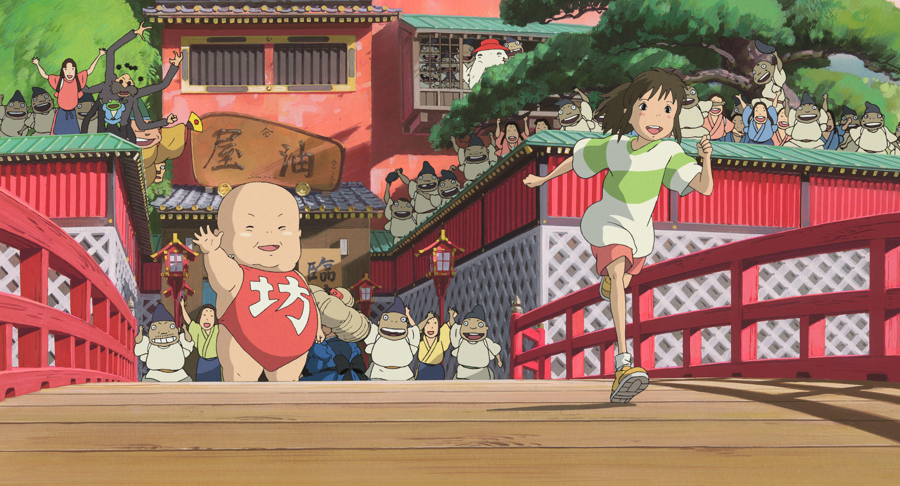

✳ АНИМЕ В СВОЁМ РИТМЕ
Меньше шума. Больше хороших историй.
ВЫБОР TSUKIRO 01 / 07
Иногда нужно
немного
другого мира.
Знакомые чувства. Незнакомые вселенные.
Находи аниме, которое останется с тобой.
物語のある場所МЕСТО ДЛЯ ТВОЕЙ СЛЕДУЮЩЕЙ ИСТОРИИ

千と千尋の神隠しSTUDIO GHIBLI / 2001ПО ТУ СТОРОНУ ПРИВЫЧНОГО
Унесённые призраками
ДЛЯ ВЕЧЕРА, КОТОРЫЙ НИКУДА НЕ СПЕШИТ
С чего начнём?
余白
Пока ничего не нашлось
Попробуй другое название или жанр.
НЕ ОБЯЗАТЕЛЬНО СМОТРЕТЬ ВСЁ
Хорошая история
дождётся тебя.
Сохраняй то, что зацепило. Возвращайся, когда будет настроение.
У каждого аниме — своё время. И у тебя тоже.
ひと休みСДЕЛАЙ ПАУЗУ.
ВЫБЕРИ СВОЁ.
ВЫБЕРИ СВОЁ.